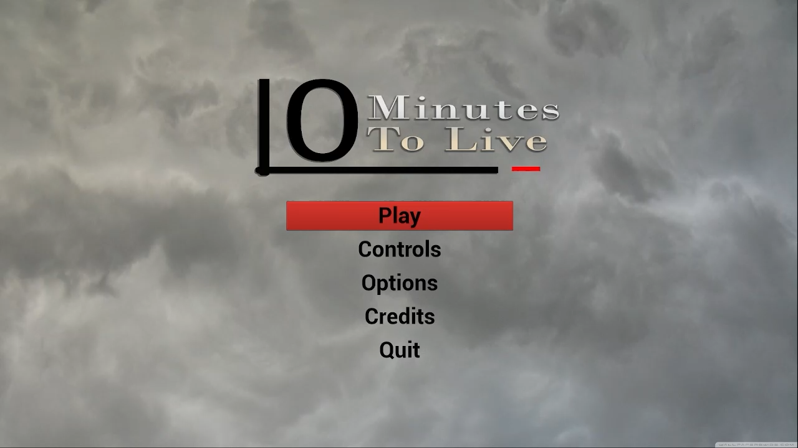
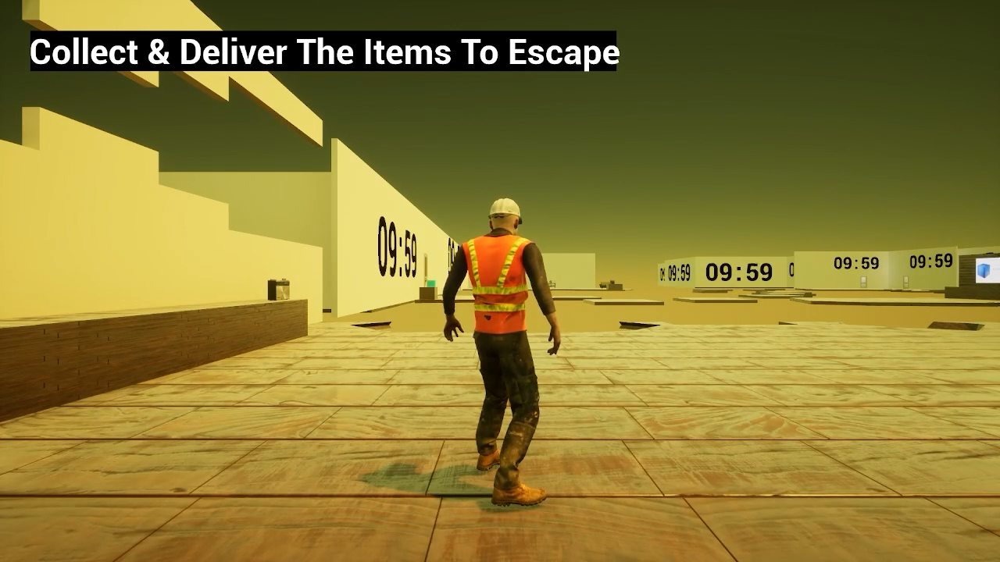
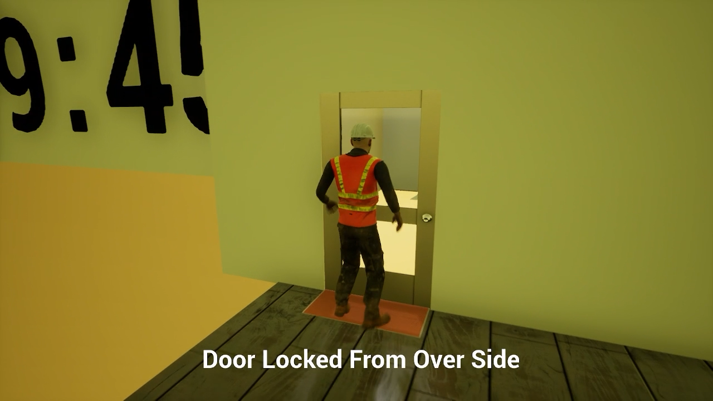
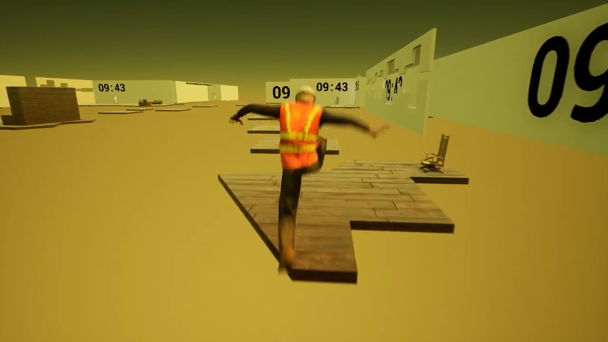
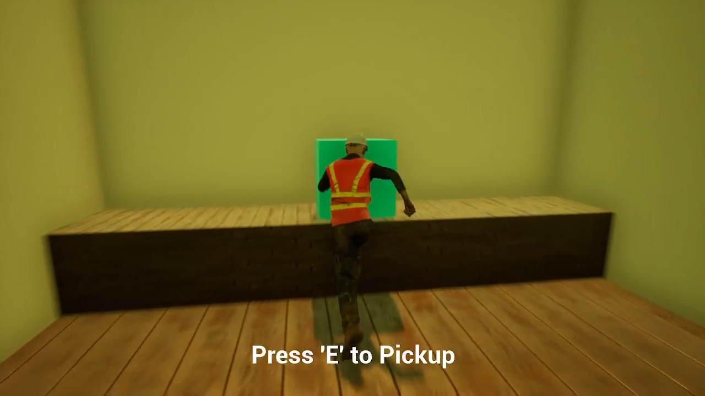
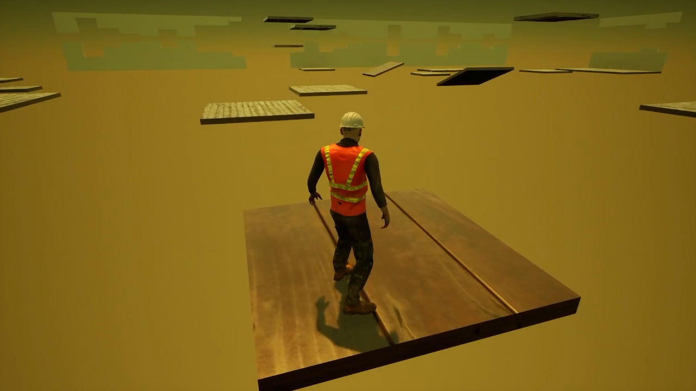
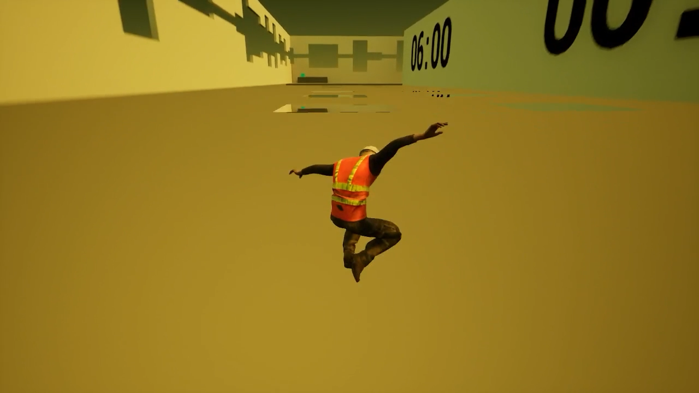
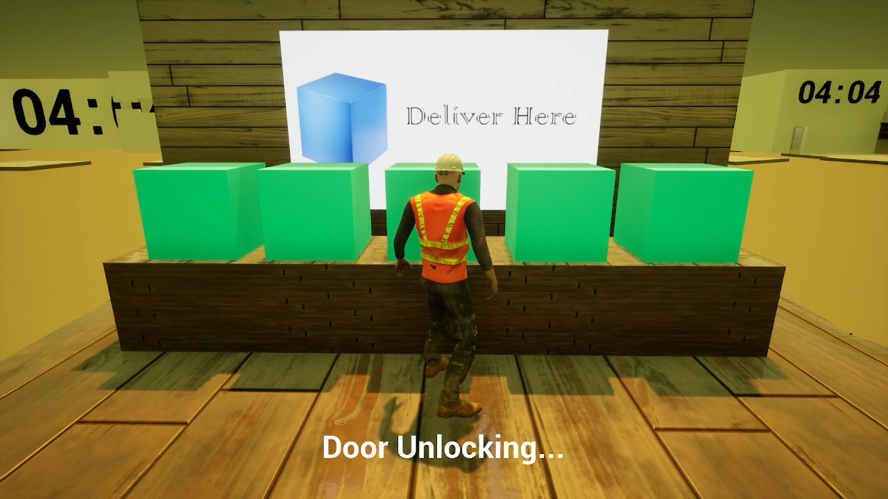

Description
During February 2022, me and three other game developers were tasked to make any game, whilst being able to undergo agile project management as a team. 10 Minutes To Live, is a mystery ‘escape room’ game with platforming elements, and puzzles where the player only has ten minutes to complete all of the minigames and retrieve all the collectables to escape. This game was made by a four person team using Unreal Engine 4 which was finished during May 2022. My contributions included programming, UI/UX design, game writing, level design, and sound design.
Screenshots
|  |  |
|  |  |
|  |  |
|  |  |